This menu allows you to set up appearance parameters in White Cat:
It also enables you to record internal positions of windows in White Cat, recall them or reset them to default.
To gain access to it, in the CFG MENU click [SCREEN CFG].
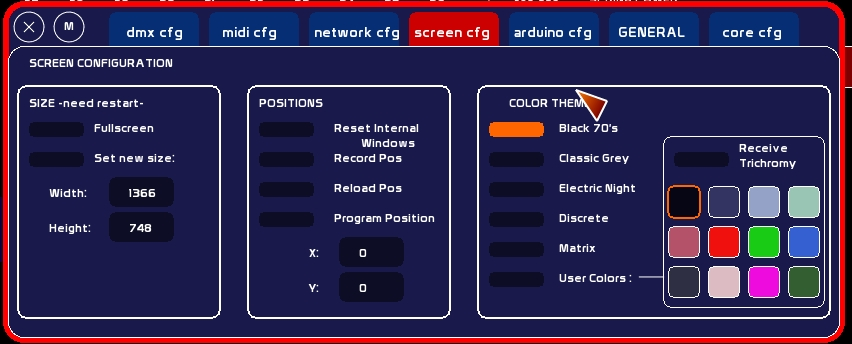
Size block relates only to the White Cat window on the desktop. You will need to restart White Cat to see changes.
Be sure to enter parameters of size matching resolutions available in your graphic card (1024×728, 1024×768, 1280×800, 1440×900, etc…). The best way is to have a look at the different resolutions from the Window's Control Panel/Display.
If you have a second monitor plugged in and active, and Windows desktop is in span mode, White Cat will be automatically set to this enlarged resolution. It may be extended to 2, 3, or 4 monitors in the same way.
Working with two monitors, enables you to set different windows (CueList, minifaders, trichromy) on the second monitor while keeping the main screen in its original form. This detection of monitors is done when White Cat starts.
[Auto] may be left ON, even if you have only one monitor. If Auto is on, [Set New Size] will not be taken as a parameter…
To set your windows in span mode (XP):
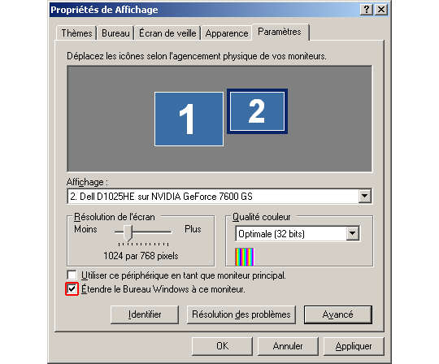
If you use 2 applications at the same time on the same computer, you will need this bordered window to minimize White Cat and access your other program quickly.
It may be useful, if you have different applications running at the same time, to jump between them with the mouse.
- click [Set New Size] ON - type new size desired - click Width or Height ! Minimum size is 1024×600.
Position block concerns:
This last parameter requires a restart of White Cat.
This function is useful if the last use of White Cat was on 2 screens and you reopen it on one screen where certain windows would not now be accessible.
! At the opening of White Cat, windows are placed in their last position when White Cat was most recently closed. This has nothing to do with recorded positions, which are a user convenience system.
- Set[Program position] On - type desired coordinates - click the value to assign to (X or Y)
Example: You want to set White Cat on a second monitor only, which allows you to use the primary display for another app. The resolution of the White Cat Monitor is 1024×768. You will need to set White Cat in X: 1024 and Y: 0.
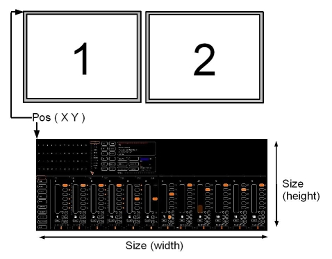
In case of hugely incorrect values, such as:
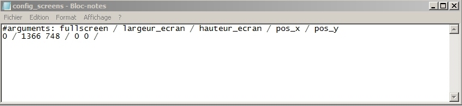
Enter 1 for On, 0 for Off
Enter instead the desired value
Enter instead the desired value
! Be careful of the syntax while editing: respect space between two values or between a value and the slash (see image here )
You have the choice between 5 built-in color themes and 1 that is completely user customizable. By default, White Cat is in “Black 70's”.
Other themes of the beta are not defined, you can propose new ones thruthe forum :
To choose a theme to apply, click its box.
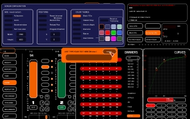
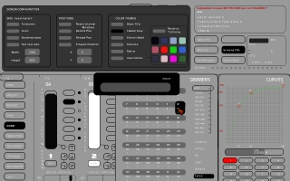
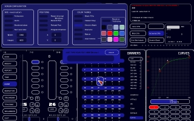
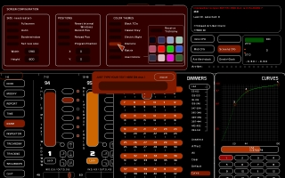
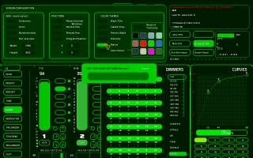
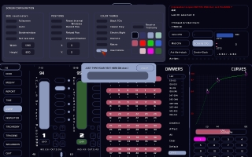
Colors of the interface are customizable, for question of luminosity or discreet needs.
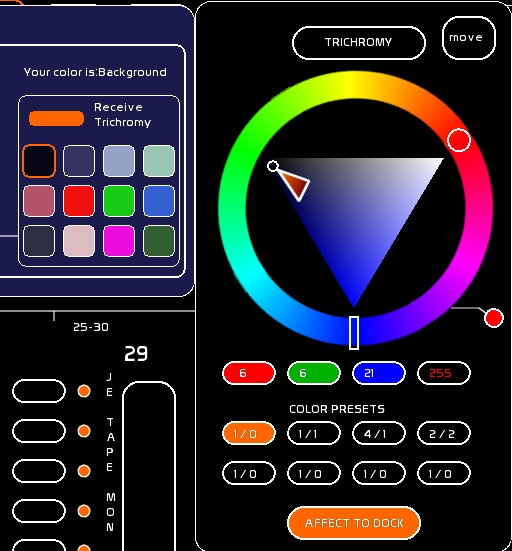
To edit colors:
! Above colors are shown what this color mainly corresponds:
To create a theme, the mix is essentially based on Background/ Lines / Fader / On mouse over.